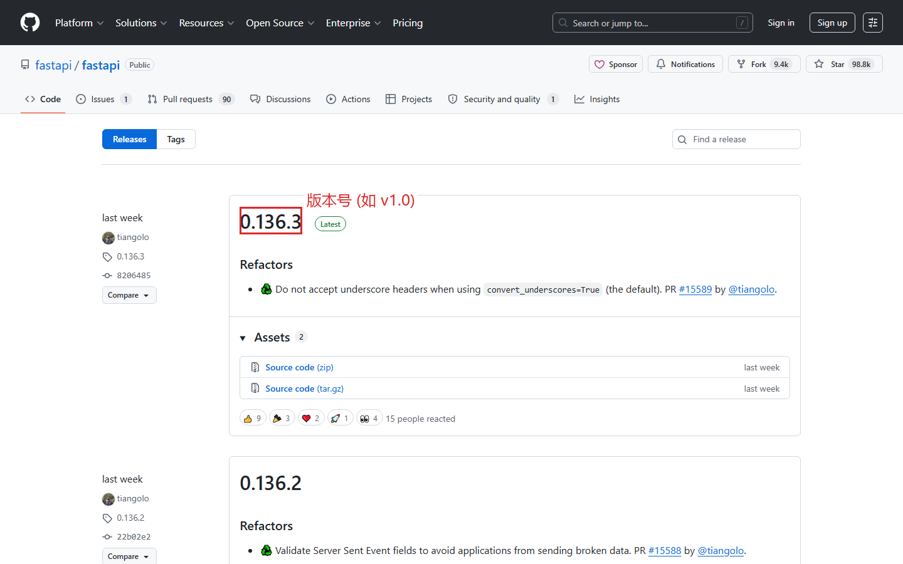
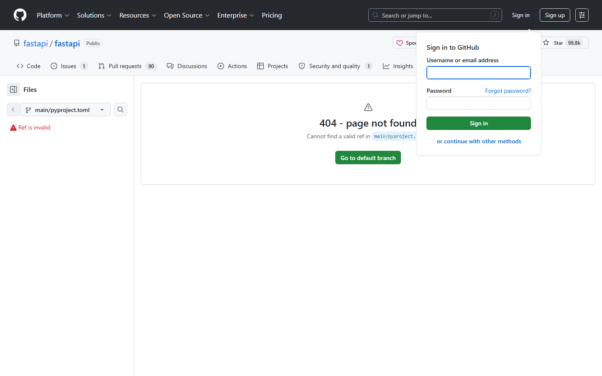
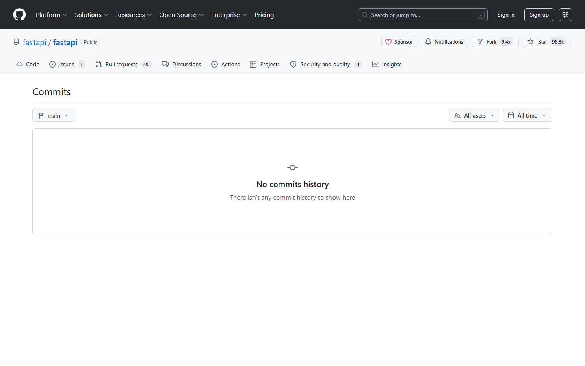

第三课：读代码（下）— 文件查看与历史追溯
时长：25 分钟 | 前置：第二课 | P0 词条：17 个 | 覆盖 UI 元素：18 个
学习目标
学完这节课，你能：
- 点进文件后，看懂文件查看页的所有按钮
- 用 Blame 功能找出每一行代码是谁写的
- 查看提交历史（Commit History），理解每次改了什么
- 切换分支查看不同版本的代码
- 在 GitHub 中搜索代码
0. 开场（1 min）
画面：从一个仓库主页开始

旁白：
"上节课我们学了仓库主页怎么看。但真正看代码的时候，你得点进文件。点进去之后，页面又变了——新按钮、新功能。
今天我们就学：文件详情页、怎么查修改历史、怎么在不同分支间切换、以及 GitHub 的搜索功能。"
1. 文件查看页（6 min）
画面：点进一个文件（推荐 .py 或 .ts 文件，代码高亮好看）

1.1 顶部信息栏
| 元素 | 英文 | 说明 |
|---|---|---|
| 左侧 | 仓库名/文件名 | 当前文件路径 |
| 右侧按钮 | Raw | 原始代码，去掉高亮和行号的纯文本 |
| 右侧按钮 | Blame | 逐行追溯，看每行代码谁写的（下节详讲） |
| 右侧按钮 | 铅笔图标 Edit | 编辑文件（需要写权限） |
| 右侧按钮 | 垃圾桶 Delete | 删除文件（需要写权限） |
| 右侧按钮 | ... | 更多操作（Copy path, View blame prior to change 等） |
1.2 代码显示区
| 元素 | 说明 |
|---|---|
| 行号 | 左侧数字，点击会高亮并更新 URL（可以分享指定行） |
| 代码高亮 | 不同关键字显示不同颜色 |
| 换行/不换行 | 长代码行是否自动换行，右上角可切换 |
操作演示：

【录屏】点进文件 → 鼠标指到 Raw 按钮 → "Raw 就是原始源码，去掉了高亮和行号，方便复制"
点击某一行号 → URL 变化 → "你看地址栏多了 #L42，现在可以直接把这一行分享给别人"
按住 Shift 再点下面一行 → "选中的行范围高亮了，URL 变成了 #L42-L50"
1.3 行号交互（细节）
| 操作 | 效果 |
|---|---|
| 单击行号 | 选中一行，URL 加 #L42 |
| Shift + 单击行号 | 选中一个范围，#L42-L50 |
| 点击行号旁 ... | 弹出菜单：Copy permalink（复制永久链接）/ View git blame / 等 |
2. Blame — 逐行追溯（6 min）
画面：点击 Blame 按钮

旁白：
"Blame 是 GitHub 上最有用的功能之一。点一下，每一行代码左边会出现谁写的、什么时候写的。"
"'Blame' 英文原意是 '责备'，但在 Git 里就是 '谁写了这行' 的意思。"
2.1 Blame 视图解读
| 元素 | 英文 | 说明 |
|---|---|---|
| 左侧头像 | — | 写这行代码的人的头像 |
| 左侧名字 | 用户名 | 谁写的 |
| 左侧 Hash | 一串数字字母 | Commit SHA（提交编号），点击可看这次提交的完整改动 |
| 左侧时间 | "3 years ago" | 什么时候写的 |
| 左侧边框颜色 | 不同颜色 | 同一批提交用同一颜色，方便区分块 |
2.2 Blame 中的交互
| 操作 | 效果 |
|---|---|
| 点击 Commit SHA | 跳到那次提交的详情页，看这次到底改了什么 |
| 点击头像/名字 | 跳转到作者的个人主页 |
| 点击行号左边的小箭头 | 展开这次提交的更多信息 |
| View blame prior to this change | 看这一行在这次修改之前是什么样的 |
操作演示：
【录屏】点击 Blame → 页面变化 → 鼠标指到左侧各种信息 → 点击一个 Commit SHA → 跳到 Commit 详情页 → "你看，这就是那次提交改的所有文件"
3. 提交历史（6 min）
画面：回到仓库主页，点击文件列表上方的 "XX commits" 链接
3.1 进入 Commits 页面
| 路径 | 说明 |
|---|---|
| 仓库主页文件列表上方 | 有个"🕐 N commits"链接，点进去 |
| 单个文件顶部 | History 按钮，只看这个文件的提交历史 |
| 直接 URL | github.com/owner/repo/commits/main |
3.2 Commit 列表解读
| 元素 | 英文 | 说明 |
|---|---|---|
| 左侧头像 | — | 提交者头像 |
| 第一行 | Commit message 标题 | 这次提交做了什么 |
| 第二行 | 用户名 committed 时间 | 谁在什么时候提交的 |
| 右侧 | Commit SHA（短编号） | 点进去看这次提交的详细 diff |
| 右侧 | 复制图标 | 复制完整的 commit SHA |
| 右侧 | <> 图标 | 浏览这次提交时的代码快照 |
3.3 单个 Commit 详情页
画面：点击一个 commit SHA 进入
| 元素 | 说明 |
|---|---|
| 顶部 | Commit message（完整版，标题+正文） |
| 上方 | 头像 + 用户名，commit 时间 |
| 右侧 | Commit SHA 完整版 + "Verified" 标签 |
| 中间 | 改动了哪些文件 |
| 每个文件 | 绿色背景=添加的行，红色背景=删除的行 |
| 文件上方 | 绿色数字（+N）= 增加了 N 行；红色数字（-N）= 删除了 N 行 |
绿色（+）= 新增代码，红色（-）= 删除代码，这是 Git 的通用规则，记住。
操作演示：
【录屏】点进 Commits → 往下翻看几条 → 点一个 Commit → 看 diff → "绿色是新增的代码，红色是删除的代码"
4. 切换分支和标签（3 min）
画面：回到仓库主页，鼠标指向分支选择器
4.1 切换分支
| 操作 | 说明 |
|---|---|
| 点击分支下拉框 | 展开所有分支列表 |
| 搜索框 | Find or create branch... 快速定位分支 |
| 分支列表 | Active branches（活跃分支）/ Your branches（你的分支） |
| 点击一个分支名 | 文件列表切换到该分支的内容 |
4.2 Tags（标签）
| 概念 | 说明 |
|---|---|
| Tag 是什么 | 给某个时间点的代码打的一个标签，通常对应发布版本 |
| 和 Branch 的区别 | Branch 是活的（不断有新提交），Tag 是死的（固定在某一次提交） |
| 查看 Tags | 分支下拉框内切换到 Tags 标签 |
| 常见的 Tag 命名 | v1.0.0、v2.3.1 表示版本号 |
操作演示：
【录屏】点击分支下拉 → 切换到 Tags 标签 → 点击一个版本号 → "你看文件列表变了，现在看到的是这个版本发布时的代码"
5. Releases（发布版本）（2 min）
画面：点击右侧面板的 Releases 或者 URL 加 /releases
| 元素 | 说明 |
|---|---|
| 最新 Release | 通常显示在右侧面板最上面 |
| 版本号 | 如 v1.5.0 |
| 发布日期 | 什么时候发布的 |
| 点击进入 | 能看到 Release Notes（更新说明）和下载文件 |
| Assets（下载文件） | 源码的 zip / tar.gz 包，有时还有编译好的可执行文件 |
有什么用：下载别人的项目时，别直接下最新代码（可能是开发的半成品），去 Releases 里下正式发布的稳定版本。
6. GitHub 搜索（2 min）
画面：演示三种搜索
6.1 仓库内搜索
| 操作 | 说明 |
|---|---|
在仓库页按 / 或 s |
打开搜索框 |
| 输入关键词 | 搜索当前仓库的代码和文件名 |
按 . |
打开 VS Code 网页版在线编辑器（不要被吓到） |
6.2 全站搜索（顶部黑条搜索框）
| 操作 | 结果类型 |
|---|---|
| 直接输入 | 先搜仓库名，再提供"搜代码/Issue/Commits 等"的链接 |
language:python fastapi |
搜 Python 语言、关键词 fastapi |
| 搜索结果过滤 | 左侧可以按 Language / Stars / 更新时间等过滤 |
6.3 常用搜索语法速查
| 语法 | 含义 | 示例 |
|---|---|---|
keyword in:name |
仓库名包含 keyword | react in:name |
keyword in:readme |
README 包含 keyword | machine learning in:readme |
language:xxx |
限定编程语言 | language:python |
stars:>1000 |
Star 数大于 1000 | fastapi stars:>10000 |
user:xxx |
某个用户的仓库 | user:tiangolo |
课后作业
- 打开任意仓库，点进一个文件 → 点 Blame → 找到最早写的那行代码（使劲往下翻）
- 在同一个文件里，点 History，看这个文件的前 5 次修改记录
- 切换分支到非 main 分支，看看文件列表有什么不同（小心别乱改）
- 在 GitHub 搜索框里搜
language:typescript stars:>50000，看返回了哪些仓库 - 找一个有 Release 的仓库，进入 Releases 页面，看看有哪些版本
本课术语速查
{.glossary-table}
| 英文 | 中文 | 出现位置 |
|---|---|---|
| Raw | 原始代码 | 文件查看页顶部 |
| Blame | 逐行追溯 | 文件查看页顶部 |
| History | 历史记录 | 文件查看页顶部 / 仓库页 |
| Commit | 提交 | 整个 Git 系统的核心概念 |
| SHA | 提交编号 | Commit 旁边那串数字字母 |
| Commit message | 提交信息 | 描述这次提交做了什么 |
| Diff | 差异/对比 | 绿色红色显示的改动内容 |
| Branch | 分支 | 左手边下拉框 |
| Tag | 标签 | 分支下拉框内 Tags 标签 |
| Release | 发布版本 | 右侧面板 |
| Release Notes | 版本说明 | Release 页面 |
| Assets | 下载文件 | Release 页面底部的附件 |
| Search | 搜索 | 顶部黑条搜索框 |
| Verified | 已验证 | Commit 详情页 |
| +N -N | 新增N行/删除N行 | Commit diff 中 |